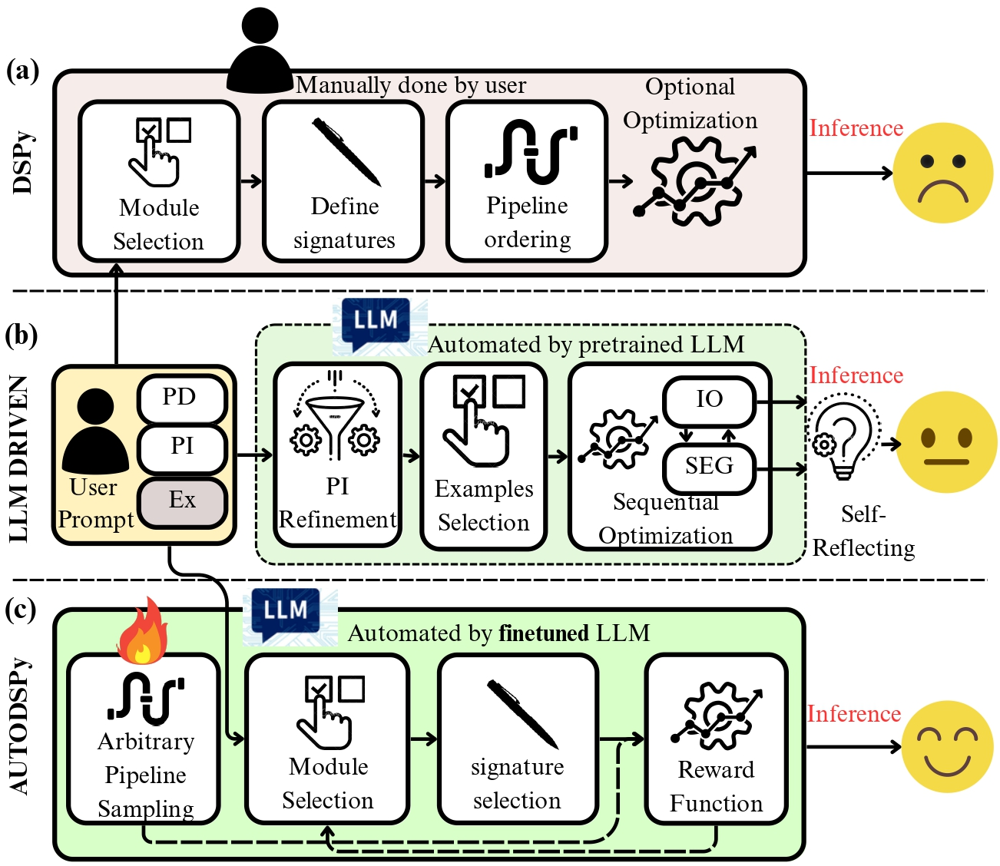
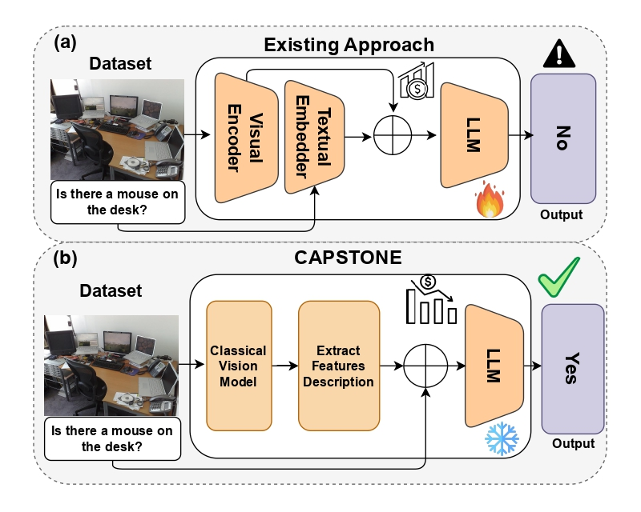
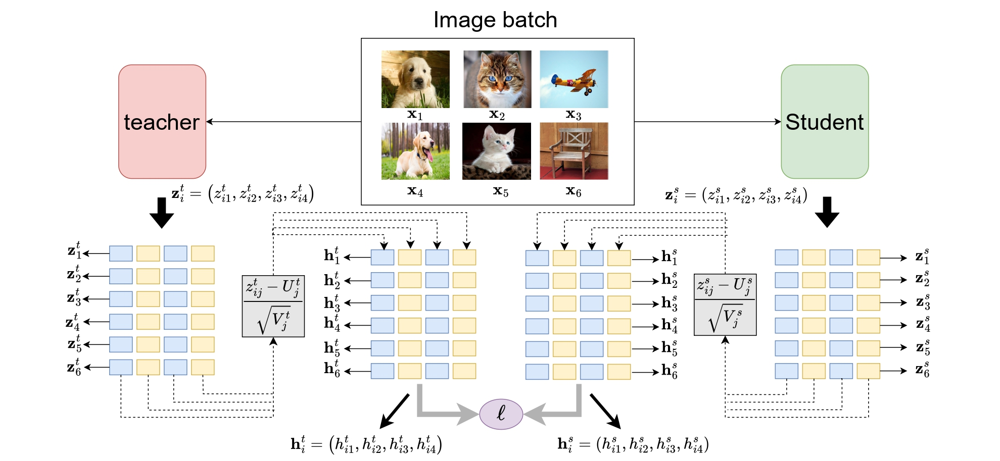
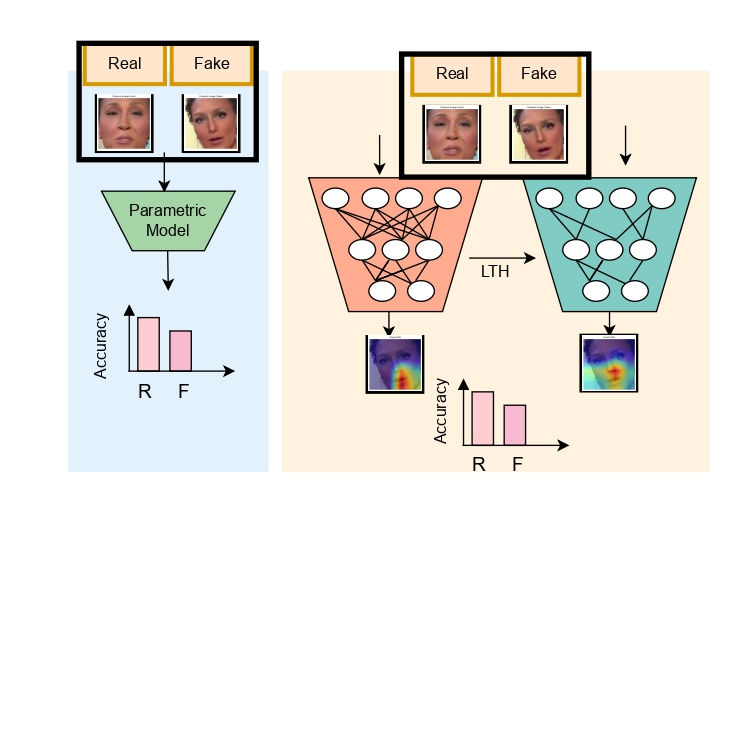
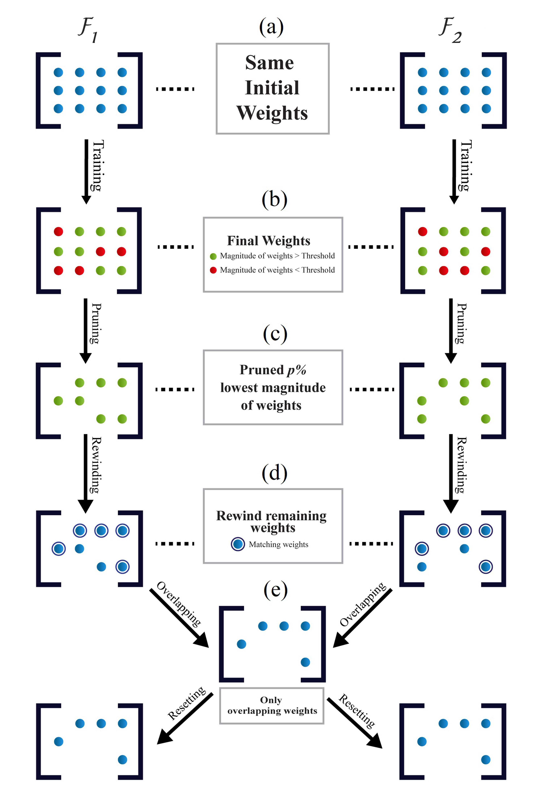
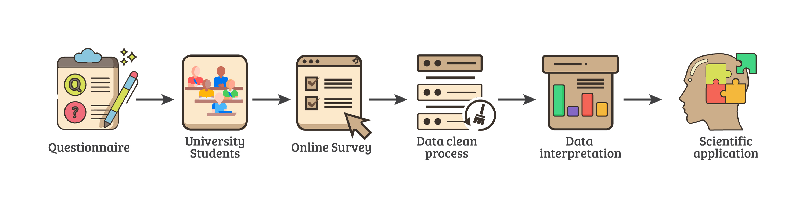
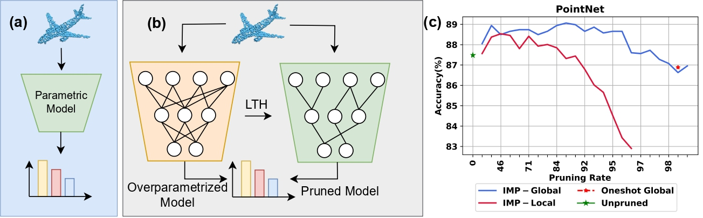
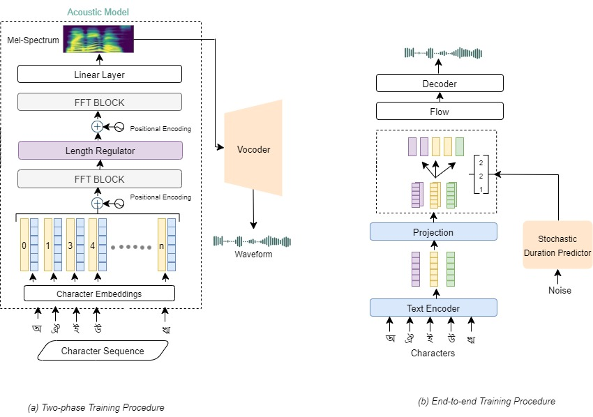
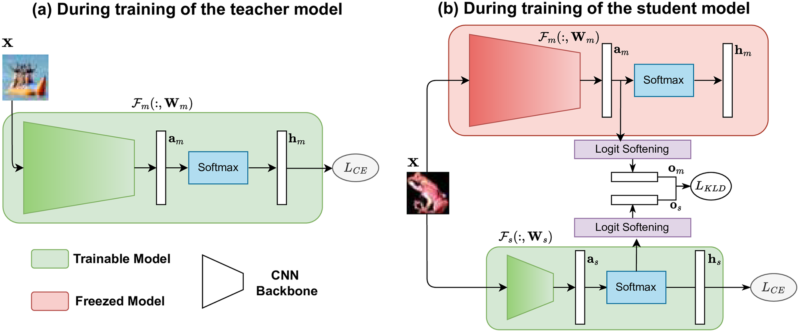
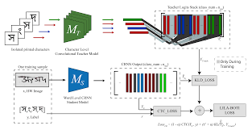

Md. Ismail Hossain
I am currently working as a researcher at the Machine Intelligence Lab, North South University, Bangladesh. Previously, I worked at the Apurba-NSU R&D Lab, NSU, under the supervision of Dr. Nabeel Mohammed and Dr. Shafin Rahman. I was also a Predoctoral Fellow at the Fatima Institute for Global AI Research (Hugging Face and Google Colab), mentored by Dr. Isidora Tourni. I completed my B.Sc. in Computer Science and Engineering from North South University in 2021.
My research centers on scalable and efficient machine learning — specifically knowledge distillation, network pruning, and learning algorithms that bridge cognitive principles and algorithmic efficiency.
I offer pro-bono mentorship to first-generation undergraduate students navigating research or hardship — reach out anytime.
News
- May '26Received a generous compute grant from Lambda to support large-scale AI research.
- Apr '26Received a project grant from Adaptation Lab. Thanks to Sara and the Adaptation team!
- Apr '26Invited to review papers at NeurIPS 2026.
- Nov '25Invited to review papers at TMLR.
- Sept '25Invited to review papers at ICLR 2026.
- Sept '25Two papers accepted to the EMNLP 2025 Industry Track.
- Jul '25LumiNet accepted at TMLR, awarded J2C Certification (Top 10%). 🎉
- Jul '25Paper accepted at Nature Scientific Data.
- Jul '25Paper accepted at IEEE SMC 2025.
- Jul '25Invited to review papers at NeurIPS 2025.
- Apr '25Invited to review papers at Pattern Recognition (IF 7.19).
- Apr '25Invited to review papers at LXAI @ ICML 2025.
- Mar '25Received project funding from the Research & Innovation Center (RIC), Government of Bangladesh.
- Jan '25Invited to review papers at IJCNN 2025.
- Jan '25Paper accepted at IEEE Transactions on Artificial Intelligence (TAI).
- Nov '24Accepted to the OxML 2025 Oxford Machine Learning Summer School Workshop.
- Sep '24Invited to review papers at the Machine Learning and Compression Workshop @ NeurIPS 2024.
- Sep '24Received the Fatima Fellowship, a global pre-doctoral fellowship supported by Hugging Face and Google Colab.
- Jul '24Paper accepted at BMVC 2024.
- Mar '24Presented a lightning talk on LumiNet at Cohere for AI (C4AI).
- Mar '24Paper accepted at PML4LRS @ ICLR 2024.
- May '23Paper accepted at PLOS ONE (IF 3.752).
- Feb '23Joined the Cohere for AI community.
- Dec '22Paper accepted at IEEE Access (IF 3.557).
- Oct '22Invited to present research at a conference organized by the Bangladesh Data Science Society and a2i, ICT Division, Government of Bangladesh.
- Sep '22Achieved Second Runner-Up in the national DL Sprint ASR Contest 2022.
- Jun '22Paper accepted at the 26th International Conference on Pattern Recognition (ICPR 2022).
Publications
-

AutoDSPy: Automating Modular Prompt Design with Reinforcement Learning for Small and Large Language Models -

CAPSTONE: Composable Attribute-Prompted Scene Translation for Zero-Shot Vision–Language Reasoning -

LumiNet: Perception-Driven Knowledge Distillation via Statistical Logit Calibration -

Uncovering Critical Features for Deepfake Detection through the Lottery Ticket Hypothesis -

COLT: Cyclic Overlapping Lottery Tickets for Faster Pruning of Convolutional Neural Networks -

A Multidimensional Dataset of Student Gaming Behavior and Academic Correlates in Bangladesh -

3D Point Cloud Network Pruning: When Some Weights Do not Matter -

Precision-Driven Low-Resource Speech Synthesis For Bangla Text-To-Speech System -

Mitigating Carbon Footprint of Hyper-parameter Selection During Knowledge Distillation -

LILA-BOTI: Leveraging Isolated Letter Accumulations By Ordering Teacher Insights for Bangla Handwriting Recognition
* denotes co-first authorship.
Work & Research
Awards & Honors
-
2026Compute GrantLambda Labs
-
2026Research GrantAdaptations Lab
-
2025J2C Certification for LumiNet — Top 10% of accepted papers since 2024Transactions on Machine Learning Research (TMLR)
-
2025Research Innovation Center Fund ($5,000)World Bank / RIC Bangladesh
-
2024Fatima Fellowship (Global Pre-doctoral Fellowship)Hugging Face & Google Colab
-
2024Oxford Machine Learning Summer School — Selected ParticipantUniversity of Oxford
-
2022National ASR Competition — 2nd Runner-UpKaggle / BUET
-
2018NSUPS Problem Solver Bootcamp — Runner-UpNorth South University
-
2018Academic Excellence Scholarship (50%)North South University
Community & Service
Peer Reviewer
Mentorship
Supervised 20+ undergraduate students at Apurba-NSU R&D Lab. Several mentees co-authored peer-reviewed publications (papers [2, 3, 10]). Offering pro-bono mentorship to first-generation researchers — reach out via email.
Talks
- 2024Cohere for AI (C4AI) — Lightning talk on LumiNet..
- 2024Spring 2024 LeT-All Workshop — Selected participant, Learning Theory Alliance.
- 2022NSU ACM Student Chapter — Workshop on Efficiency in Deep Learning.
- 2022Microsoft Student Learn — Session on ASR and OCR advancements.
Notable Collaborators
A selection of researchers and institutions I have had the privilege of collaborating with across academia and industry.